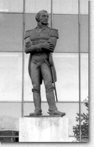
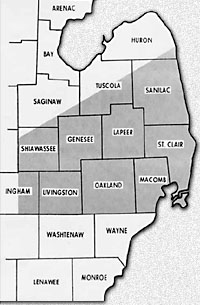

| |

|
Macomb County, Michigan
Named in honor of General Alexander Macomb, a highly decorated veteran of the War of 1812,
Macomb County was formally organized in 1818 as the third County in the State of Michigan
(after Wayne and Monroe counties). At the time of its establishment as a county, Macomb
was considerably larger than it is today. Macomb County's original boundaries extended
north through much of the thumb region of the state, east to Lake Huron, and west to the
middle of the state.
(Picture to Left) General Alexander Macomb
|
|
| |
Macomb
County in 1815
This area included all the territory that now forms the counties of St. Clair, Oakland,
Livingston, Genesee, Lapeer, large portions of Shiawassee, Ingham, Sanilac and Tuscola, as
well as, smaller portions of Huron and Saginaw counties.
In 1819 and 1820, large portions of the County were removed to form the Counties of
Oakland, Lapeer, Genesee and St. Clair.
(Picture to Right) Macomb County Map c.1815
|

|
|
| |
Past to Present...
The first Europeans had arrived in the area during the 17th century. They included French
fur trappers who recognized the richness of the marshes and sought new opportunities for
trade.
The first organized immigrant settlement in the County was established in 1784 by a group
of missionaries known as the Moravians. They settled along the banks of the Clinton River,
then known as the Huron River, but were forced to leave four years later by the
Chippewas.
In 1796, a new settlement, located on the Clinton River a few miles downstream, was
established by a man named Christian Clemens. Known as Mount Clemens, the settlement would
eventually become the Macomb County seat. In the 1800's, settlers moved into the interior
of the County, carving out farms from the hardwood forests.
During the 1870's, mineral baths brought international fame to Mount Clemens. Many
believed the waters had healing powers. Although the stream still runs beneath the city,
interest in the spas died out in the early 20th century.
Between 1920 and 1930, Macomb County doubled in population, rising from 38,103 to 77,146
persons. Two significant developments spurred this growth -- the establishment of
Selfridge Field in 1917 and the beginning of the urbanization movement northward from the
City of Detroit. During the 1940's and 1950's, the movement from the central city to the
suburbs increased. The largest growth occurred between 1950 and 1970, when over 440,000
people were added to the County’s population.
Today, Macomb County encompasses 482 square miles and ranks third in population in the
State, with a 2000 census total exceeding 800,000 persons. The County is recognized as a leader
in business and industry, and designated as a "Community of Economic Excellence"
by the State of Michigan. Despite its large population and urban characteristics,
approximately 55 percent of the County's land area is vacant or in agricultural use.
|
|